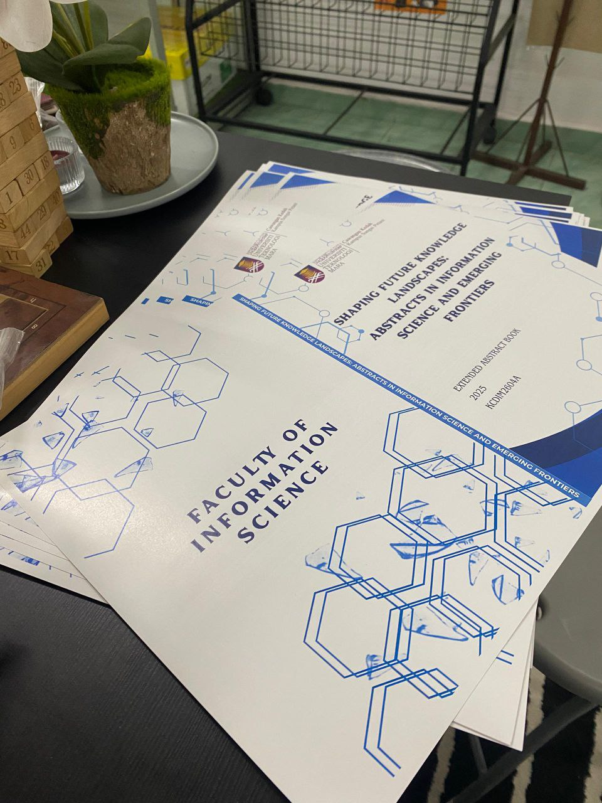
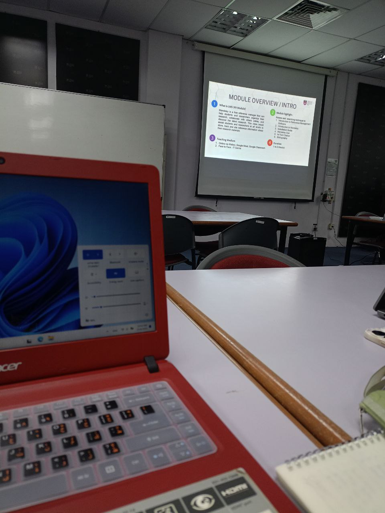

🞂Enrolled in the Library Skills & Information Literacy course, which covered:
- Techniques for academic information searching
- Introduction to OPAC and cataloging systems
- Citation writing and information ethics
🞂Participated in the Digital Publishing Program as Treasurer:
- Managed financial records for the publication of a digital abstract book
- Supported the preparation of information resources in a professional format


🞂Involved in the SULAM – Bridging Students Digital Literacy project:
- Conducted digital literacy training for rural students
- Introduced digital library resources using information systems
This experience significantly deepened my understanding of the library’s role as an inclusive and dynamic center of knowledge.
Through academic exposure and hands-on involvement in programs like Digital Publishing.
I learned how libraries can empower communities by bridging digital gaps and promoting ethical information use.
It also strengthened my confidence in managing responsibilities and delivering knowledge in ways that are accessible and impactful.